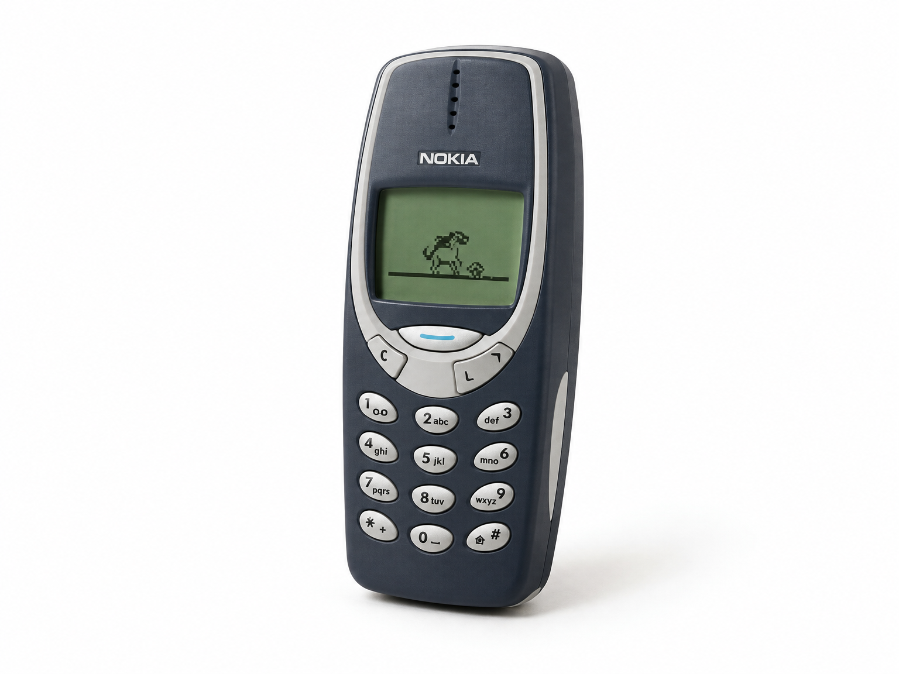

1. Nokia 3310
Legendarna wytrzymałość, świetna bateria, kultowa gra Snake II i intuicyjna obsługa.
10/10Zobacz, które modele zdobyły najwięcej punktów w rocznym rankingu.

Legendarna wytrzymałość, świetna bateria, kultowa gra Snake II i intuicyjna obsługa.
10/10
Elegancki telefon biznesowy oferujący rozbudowane funkcje, wygodną obsługę i niezawodność.
9.4/10
Kompaktowa konstrukcja, obsługa WAP i dobry zestaw funkcji w przystępnej cenie.
9.1/10